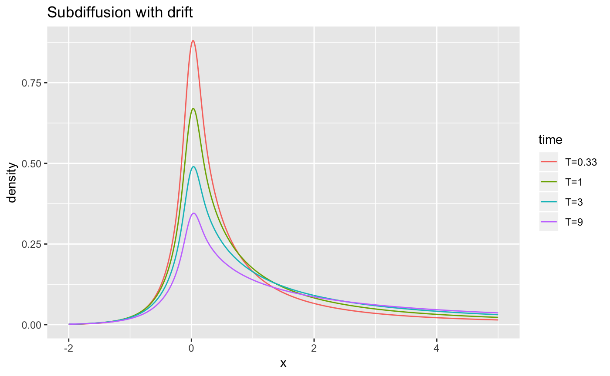

The MittagLeffleR R package
- calculates probability densities, probabilities and quantiles, based on a
Laplace-Inversion algorithm by Roberto Garrappa. - simulates random variables from both types Mittag-Leffler distributions
- fits a Mittag-Leffler distribution to data, using the log-moments estimator (for the first type of distribution) by Dexter Cahoy.
The first type Mittag-Leffler distribution is a heavy-tailed distribution, and occurs mainly as a waiting time distribution in problems with “fractional” time scales, e.g. times between earthquakes.
The second type Mittag-Leffler distribution is light-tailed, and “inverse” to the sum-stable distributions. It typically models the number of events in fractional systems and is used for time-changes of stochastic processes, e.g. anomalous diffusion processes.
Installation
Stable release on CRAN
You can install MittagLeffleR from CRAN via
install.packages("MittagLeffleR")
library(MittagLeffleR)Development version on Github
Install the devtools package first, then
# install.packages("devtools")
devtools::install_github("strakaps/MittagLeffler")
library(MittagLeffleR)Usage
See reference manual.
Examples
Fitting a Mittag-Leffler distribution
Generate a dataset first:
library(MittagLeffleR)
y = rml(n = 10000, tail = 0.9, scale = 2)Fit the distribution:
logMomentEstimator(y, 0.95)
#> tail scale tailLo tailHi scaleLo scaleHi
#> 0.9030906 2.0045782 0.9027436 0.9034377 2.0026354 2.0065210Read off
- the shape parameter \(0 < \nu < 1\),
- the scale parameter \(\delta > 0\),
- their 95% confidence intervals.
Calculate the probability density of an anomalous diffusion process
Standard Brownian motion with drift \(1\) has, at time \(t\), has a normal probability density \(n(x|\mu = t, \sigma^2 = t)\). A fractional diffusion at time \(t\) has the time-changed probability density
\[p(x,t) = \int n(x| \mu = u, \sigma^2 = u)h(u,t) du\]
where \(h(u,t)\) is a second type Mittag-Leffler probability density with scale \(t^\alpha\). (We assume \(t=1\).)
library(ggplot2)
library(tidyr)
tail <- 0.65
dx <- 0.01
x <- seq(-2,5,dx)
t <- 3^(-1:2)
# cut off time so that only 1 % of probability is lost
umax <- qml(p = 0.99, tail = tail, scale = max(t), second.type = TRUE)
u <- seq(0.01,umax,dx)
H <- outer(u,t, function(u,t) {dml(x = u, tail = tail, scale = t^tail)})
N <- outer(x,u,function(x,u){dnorm(x = x, mean = u, sd = sqrt(u))})
p <- N %*% H * dx
df <- data.frame(p)
names(df) <- sapply(t, function(t){paste0("T=",round(t,2))})
df['x'] <- x
df %>%
gather(key = "time", value = "density", -x) %>%
ggplot(mapping = aes(x=x, y=density, col=time)) +
geom_line() +
labs(ggtitle("Subdiffusion with drift"))
Vignettes
See the page strakaps.github.io/MittagLeffleR/articles/ for vignettes on
- Plots of the Mittag-Leffler distributions
- Details of Mittag-Leffler random variate generation
- Probabilities and Quantiles